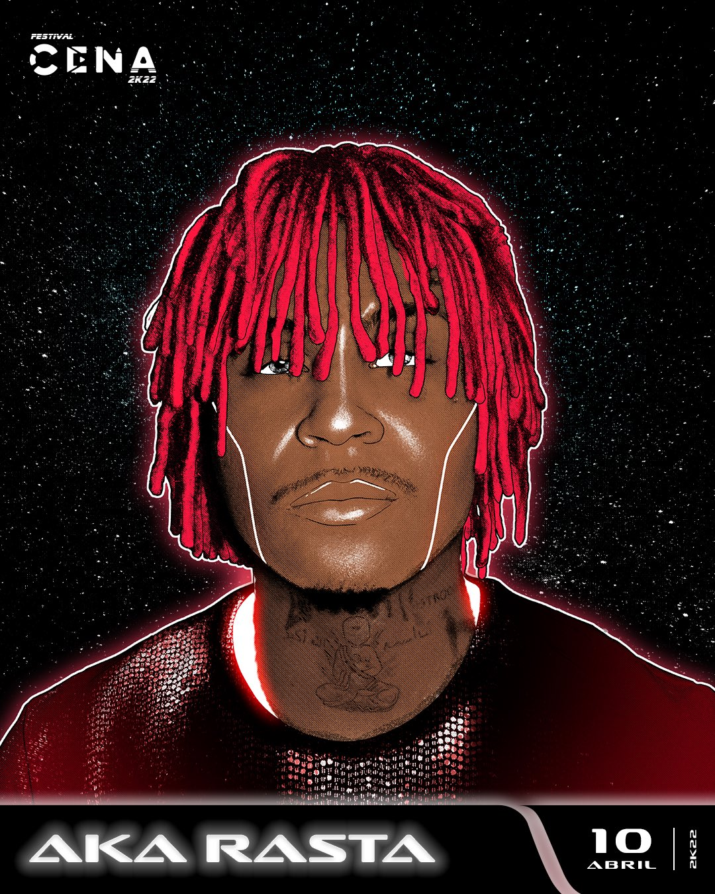

Aka Rasta
Guilherme Ramos, ou Aka Rasta, é um artista original de Curitiba e criador do coletivo Astro Gang. Seu primeiro trabalho independente foi em 2017, com a Astronauta: Mixtape. Lançada sob o selo Astro Gang, o projeto conta com colaborações de MC Igu e Luiza Sandmann. Alguns anos depois, em 2018, o artista disponibilizou dois dos prováveis maiores hits do início de sua carreira, “Tic Tac” e “Fases”, faixas que com certeza determinaram a rota de Rasta. Inclusive foram anunciados remixes por artistas como DEREK e Froid, que estavam no pico de sua popularidade no momento do lançamento.
Festival Cena
Aka Rasta já foi um dos artistas convocados para o Festival Cena, um dos maiores festivais de Rap/Trap do Brasil, tendo aparição nas edições 22k e 23k, sendo um dos provaveis nomes intocaveis paras as futuras edições do evento.
Confira performace
Spotify
Zima
Zima é o primeiro álbum de estúdio oficial de Aka Rasta, não considerando a sua primeira mixtape, Astronauta, de 2017. O álbum foi bastante promovido pelo artista e passou por diferentes conceitos, datas e títulos, originalmente se chamando Zima Blue